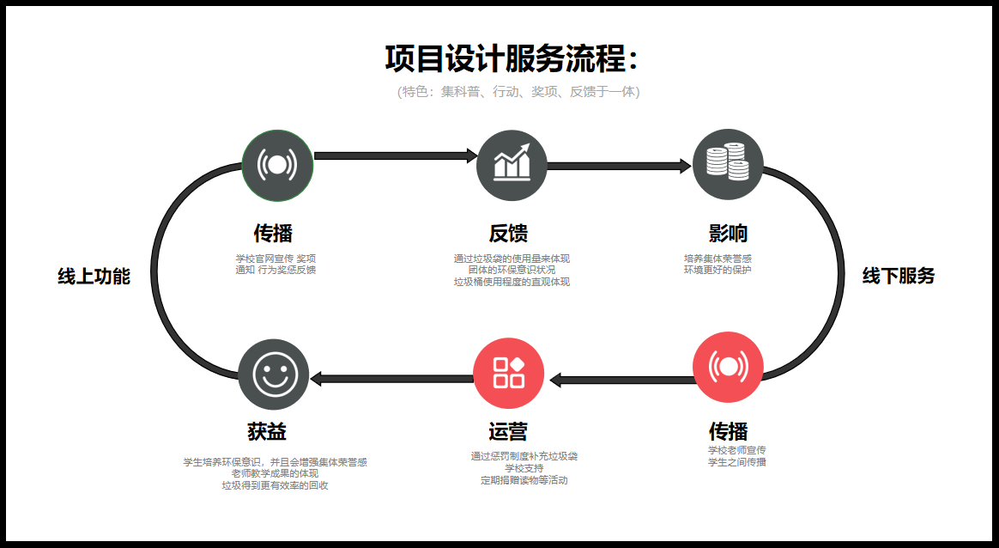
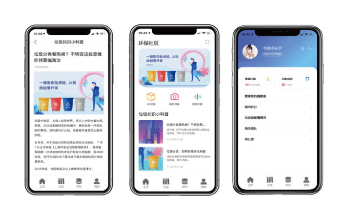
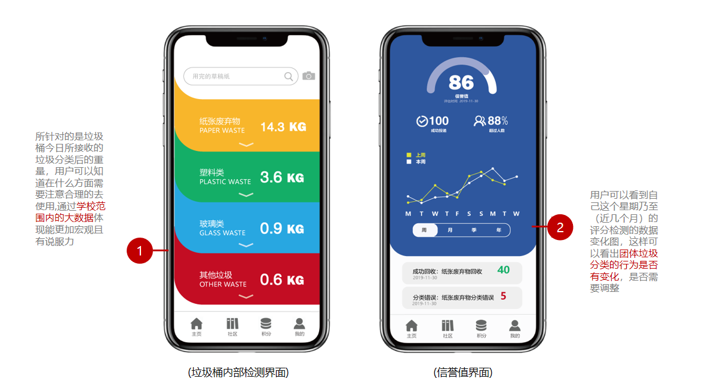
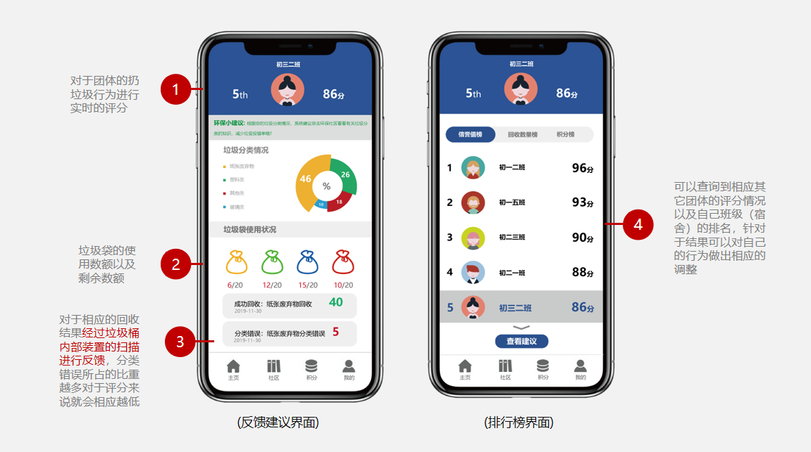

Garbage campus system

- Partner:Zhangyun Fanyueling Maojunlin
- Adviser:Liuyan
- Finish date:2019/12/12
My Design Principles
Because of the special nature of the campus, students are less likely to be exposed to kitchen waste sorting and hazardous waste. Basically, they are in contact with recyclable waste (paper, plastic), so we need to pay attention to this phenomenon Reasonable allocation of campus trash cans. At the same time, it is necessary to focus on cultivating students' environmental protection habits, correct some inherent bad behaviors, or improve correct behaviors.
Information Architecture
 |
Online evaluation system Trash can hardware
|
Software general color matching is the appearance of the SCM color:red,yellow,blue.
The software has five operating interfaces(as shown above).Each area has a very distinct division.
|
- APP Interface Design
The APP is aimed at users and users, and can more quickly know their feedback on whether the recent garbage and the disposal is environmentally friendly. Because of the particularity of the student's grade stage, the app under the all high school is generally viewed by the teachers of each class, the students of the university are the dormitory heads of the ea-
ch dormitory, and the head of the half class.
Most students think that garbage should be classified, but the actual behavior is exactly the opposite of what they think. So it shows that in this era, it is very important to cultivate students' awareness of garbage classification, b- |
App Accessory Interface
The registration status can only be used after being verified and confirmed on campus. Students can log in directly of the through the student ID and password, and the system automatically matches the corresponding class. Teachers log in with teaching cards.
App Main Interface
 
Each garbage bag has a QR code. You can upload and record the data to the campus management system by tearing a garbage bag. Then the device displays the number of remaining garbage bags. When the balance is insufficient, it will remind you to add it in time. In this way, the garbage generation of a group can be recorded, and users can be more intuitively understood.
- Design extra highlights
|